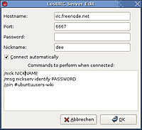

LostIRC
Archivierte Anleitung
Dieser Artikel wurde archiviert, da er - oder Teile daraus - nur noch unter einer älteren Ubuntu-Version nutzbar ist. Diese Anleitung wird vom Wiki-Team weder auf Richtigkeit überprüft noch anderweitig gepflegt. Zusätzlich wurde der Artikel für weitere Änderungen gesperrt.
Zum Verständnis dieses Artikels sind folgende Seiten hilfreich:
LostIRC  ist ein sehr kleiner IRC-Client, der auf das Notwendigste reduziert wurde, allerdings seit einiger Zeit nicht mehr weiterentwickelt wird.
ist ein sehr kleiner IRC-Client, der auf das Notwendigste reduziert wurde, allerdings seit einiger Zeit nicht mehr weiterentwickelt wird.
Er unterstützt folgende Funktionen:
Tab-Vervollständigung für Nickname und IRC-Befehle
Automatische Verbindung zu Server und Channels
Logdateien
tastaturgestützt - also auch ohne Maus bedienbar (außer bei URLs, siehe unten)
Empfang und Versand von Dateien per DCC
ein- und ausblendbare Benutzerliste
Tray-Minimierung
Sein größter Nachteil ist, dass URLs im Chat nicht direkt anklickbar sind. Man muss diese erst umständlich herauskopieren, was in der allerneusten Version, die aber bisher in keinem Ubuntu-Repository zu finden ist, auch per Strg + C funktioniert. Wer eine früherer Version nutzt, muss die URL mit der Maus markieren, um den Text dann mit der rechten Taste kopieren zu können.
Installation¶
Aus den Paketquellen¶
LostIRC lässt sich über das Paket
lostirc (universe, [2])
aus den Ubuntu-Quellen installieren [1].
Danach erhält man einen Menüeintrag unter "Anwendungen -> Internet -> LostIRC".
Wer in den Komfort der neusten Patches und Funktionen und auch der deutschen Sprachdatei kommen will, sollte sich das Programm selbst kompilieren, was dank der geringen Abhängigkeiten sehr leicht geht.
Aus den Quellen kompilieren¶
Hinweis:
Die Wartung von LostIRC ist leider nicht die beste. Der Programmierer Morten Brix Pedersen hat seit Mitte 2005 keine großen Änderungen mehr vorgenommen. Dafür hat der Debian-Maintainer Martin Braure de Calignon einige Patches in das CVS-Repository eingespielt. Leider hat er gleichzeitig andere Patches in das Debian-Paket eingespielt, so dass aktuell zwei Versionen existieren. Eine im CVS und eine in Debian/Ubuntu, die nicht mehr aufeinander aufbauen. Dee hat sich hingesetzt und beide Code-Teile zusammengeführt und selbst kleine Änderungen vorgenommen. Es ist aber unklar, wann und ob diese Änderungen je in das offizielle CVS oder in Ubuntu einfließen werden.
Aktuell wird daher dazu geraten, nicht die Pakete aus dem CVS zu nehmen, sondern die von dieser Webseite  .
.
Bevor man das Programm kompiliert, benötigt man neben dem unter [5] genannten Paket build-essential noch ein paar Hilfsprogramme und Entwicklungspakete:
autoconf
automake
cvs
gettext
libtool
libgtkmm-2.4-dev
Mit dem letzten Paket werden eine ganze Menge anderer Pakete mitinstalliert, die man auch benötigt.
Nun lädt man von dieser Webseite das Programm als tar-Archiv, was man noch entpacken [6] muss. Dort findet man zwei verschiedene Versionen: Dabei sollte man die Version wählen, die nicht für Dapper Drake entstanden ist, sondern die für alle nachfolgenden Versionen.
Danach erzeugt man zuerst im Terminal [4] mit
./autogen.sh
alle notwendigen Dateien und kompiliert und installiert danach das Programm wie gewohnt [5]. 
Automatische Verbindung¶
Bei "Ansicht -> Serverliste" (oder Strg + S ) trägt man die Server ein, zu denen man sich verbinden möchte. Das Autologin wird wird hier am Beispiel irc.freenode.net / #ubuntuusers gezeigt.
Zuerst klickt man auf "Hinzufügen" und trägt folgende Daten ein:
Hostname: irc.freenode.de
Port: 6667
Passwort: In diesem Fall leer lassen!
Nickname: Der Benutzername
Bei "Automatisch verbinden" kann man einen Haken setzen, wenn LostIRC sich sofort nach dem Start mit diesem Server verbinden soll.
Um sich noch in den Channel einzuwählen, fügt man folgenden Text in dem Feld bei "Befehle, die nach einer Verbindung ausgeführt werden:" ein:
/join #ubuntuusers
Zusätzlich kann man hier jede (durch Enter getrennte) Liste von IRC-Befehlen verwenden, die es gibt. So ist es zum Beispiel noch sinnvoll, sich automatisch mit
/nick NICKNAME /msg nickserv identify PASSWORT
zu identifizieren.
Wenn alles eingetragen ist, klickt man auf "OK" und kann dann per "Verbinden" zum Server verbinden. In der Server-Übersicht kann man bei "Auto-Verbindung" auch zusätzlich noch einmal einen Haken setzen, wenn man sich bereits beim LostIRC-Start einloggen möchte.
Eigene Farbdefinitionen¶
LostIRC unterstützt als Standard nur zwei Farbschemen. Einmal "Weiß auf Schwarz" und dann "Schwarz auf Weiß", die man unter "Ansicht -> Einstellungen -> Farben" auswählen kann. Eine Änderung wirkt sich aber nur auf neu geöffnete Tabs auf.
Um eigene Farben zu definieren, kann man sich aber in einem Editor [3] eigene Werte definieren. LostIRC muss hierfür aber geschlossen sein, da die Farbdefinitionen beim Beenden sonst überschrieben werden! Danach öffnet man im Homeverzeichnis im versteckten Ordner .lostirc die Datei colors.conf, wenn man Weiß auf Schwarz nutzt bzw. colors2.conf, wenn man Schwarz auf Weiß nutzt. In der Datei findet man dann 21 Farbdefinition im Hexadezimalformat (von HTML-Seiten vielleicht bekannt).
Achtung!
Es ist wichtig, dass man außer diesen Zahlen nichts verändert. Es dürfen keine zusätzlich Leerzeichen am Ende der Zeilen stehen oder zusätzliche Zeilen oder gar Kommentare eingefügt werden. Ansonsten wird die Datei bei einem Start von LostIRC als fehlerhaft eingestuft und neu generiert. Die Kommentare unten in der Liste sind nur zur Erklärung und nicht zur Übernahme gedacht.
Die folgende (noch unvollständige) Liste zeigt dabei, welche Farbdefinition für welchen Text gilt:
bgcolor = #FFFFFF // Hintergrund color0 = #000000 // Text color1 = #FFFFFF // Texthintergrund color10 = #00CCCC color11 = #33DDEE // IRC-Servername und Port color12 = #0000FF color13 = #EE22EE color14 = #777777 color15 = #999999 color16 = #BEBEBE // connecting, leaving, statistics color17 = #000000 color18 = #FFFFFF color19 = #000000 color2 = #0000CC // Klammern der anderen User color3 = #00CC00 // IP Adressen color4 = #DD0000 color5 = #AA0000 color6 = #BB00BB color7 = #FFAA00 // Servermeldungen und eigene Klammern color8 = #EEDD22 // Nicknames bei einem Ping color9 = #33DE55 // Meldungen beim Verlassen des Channels
Diese Liste darf gerne erweitert werden!
Sonstige Einstellungen¶
Unter "Ansicht -> Einstellungen -> Einstellungen" kann man noch folgende Sachen auswählen:
"Nick-Vervollständigungszeichen" - Dieses Zeichen wird an einen Nickname angehängt, wenn man diesen mit Tab automatisch vervollständig.
"Wörter zum Benachrichtigen" - Eine durch Leerzeichen getrennte Liste von Wörtern, die sich wie die Erwähnung des eigene Nick (auch ping genannt) auswirken.
"Maximale Anzahl von Zeilen im Cache" - Anzahl der Zeilen, die von der Konversation angezeigt werden.
"Speichere Unterhaltung" - Speichert die Logdateien aller offenen Channels unter .lostirc/logs in der Form #channel_server.
- Erstellt mit Inyoka
-
 2004 – 2017 ubuntuusers.de • Einige Rechte vorbehalten
2004 – 2017 ubuntuusers.de • Einige Rechte vorbehalten
Lizenz • Kontakt • Datenschutz • Impressum • Serverstatus -
Serverhousing gespendet von